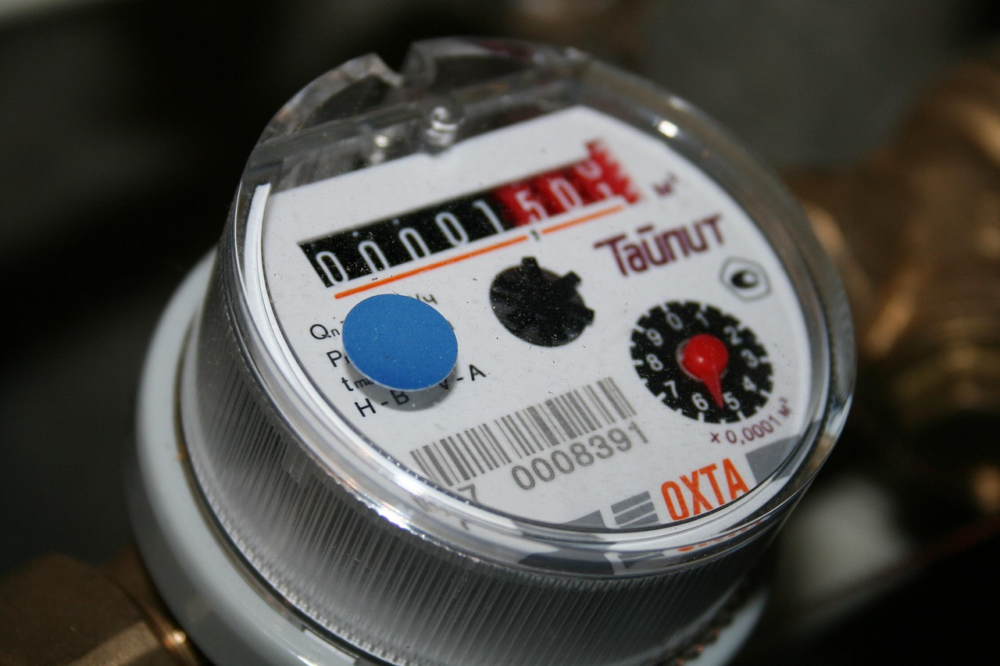

Troubleshooting Is a Mode, Not a Job Title
“Troubleshooting” can mean anything from a dead kitchen circuit to a nuisance trip in a commercial panel to a production line fault that’s costing thousands per hour. It shows up in every track — but the context changes the stress.
- Residential: more mystery symptoms, more customer pressure, more “it worked yesterday.” (See the Residential Electrical reality guide.)
- Commercial: more systems, more coordination, more “don’t shut down the building.” (See the Commercial Electrical reality guide.)
- Industrial: more complexity, higher stakes, and more maintenance culture (good or bad). (See the Industrial Electrical reality guide.)


If you want the “official” troubleshooting lane on KnackForThis, start here: Troubleshooting & Maintenance: What It Really Requires. This article is the psychology: why the same work feels like fuel for one person and exhaustion for another.
What Troubleshooting Actually Feels Like Day-to-Day
The work is rarely “swap the part, problem gone.” Real troubleshooting is a loop: collect symptoms → test → interpret → narrow → test again → verify → document → explain. The grind comes from not knowing at the start, and being judged on how quickly you get to knowing.
- Incomplete information: the person reporting the problem often can’t describe it well.
- Messy causes: multiple changes (loads, weather, usage, vibration, time) can be involved.
- Pressure to be fast: people want certainty on a timetable reality doesn’t always obey.
- Accountability: if you miss the true cause, you’ll see it again (callbacks, repeat faults, reputation hits).
Troubleshooting rewards one thing above all: patience with uncertainty. If uncertainty makes you angry or panicky, the job doesn’t get “better” with experience — it just gets louder.
Why Some Electricians Get Energized by Troubleshooting
For the right brain type, troubleshooting is addictive in a healthy way: it’s structured curiosity. The best part isn’t “being right” — it’s watching the system behave differently because you understood it.
- You like puzzles with real consequences: you enjoy narrowing possibilities instead of guessing.
- You tolerate slow wins: you’re fine spending time proving what’s true.
- You enjoy clean process: isolate variables, test, confirm, repeat.
- You like “invisible” mastery: your value shows up as fewer failures later, not a flashy install today.
- You can explain clearly: you can translate technical reality into human language without arrogance.
The “energized” electricians usually get a dopamine hit from clarity emerging from chaos. That’s a personality trait, not a motivational poster.
Why Troubleshooting Drains Other Electricians
The draining version of troubleshooting is not “hard work.” It’s emotional wear: unclear problems, urgency, people watching, and the sense that you’re always behind before you even start.
- You hate ambiguity: you want defined steps and predictable outcomes.
- You hate being “on” socially: troubleshooting often includes customer/manager pressure and constant questions.
- You need visible progress: diagnostics can look like “standing there testing” to everyone else.
- You take blame personally: faults recur; equipment lies; people misreport symptoms. That’s the game.
- You prefer building over restoring: some people thrive on installs because the plan is the plan.
If you prefer defined scope and clean installs, that’s not a moral flaw. It’s fit. Run the Residential Electrical Fit Diagnostic if you’re leaning toward that install/service mix.
The Hidden Stressors People Don’t Admit
Most burnout stories aren’t about voltage. They’re about workflow and expectations. Troubleshooting turns you into the person everyone calls when the easy stuff is already gone.
- Interrupt-driven days: you start five problems and finish two — because fires keep starting.
- After-hours pressure: downtime is expensive; “just one more thing” becomes a lifestyle.
- Documentation: the best troubleshooters write things down. Many shops hate that and still demand results.
- Politics: sometimes the “problem” is process, not equipment — and you’re not allowed to say that out loud.
- Safety tension: people want speed; reality requires verification and lockout discipline.
Industrial environments can be either the best place for troubleshooting (good maintenance culture) or the worst (constant chaos). If you’re drawn to that lane, compare your fit with the Industrial Electrical Fit Diagnostic.
How to Tell If You’re Built for It
You don’t need to be a genius. You need a temperament: steady under uncertainty, disciplined in testing, and able to stay patient when other people are anxious.
- You don’t “try things.” You test things.
- You like narrowing. You can hold multiple hypotheses without marrying any of them.
- You can be wrong without melting down. You adjust based on evidence.
- You care about verification. You confirm the fix — you don’t just hope the symptom disappears.
- You can communicate calmly. People tolerate slow diagnostics when you can explain the why.
The simplest next step is a self-check: Troubleshooting & Maintenance Fit Diagnostic. It’s not a skills test. It’s a tolerance test.
Common Misreads That Waste People’s Time
People talk themselves into troubleshooting for the wrong reasons. Here are the classic traps.
- “I’m smart, so I’ll like it.” Intelligence helps, but temperament matters more.
- “It pays better.” Sometimes. Sometimes it just means you get the worst calls.
- “I hate repetitive installs.” Troubleshooting is not “creative freedom.” It’s disciplined narrowing.
- “I’ll do it until I move up.” If you hate it, you’ll burn out before you “graduate.”
If you’re unsure which environment you fit, compare the day-to-day reality guides: Residential · Commercial · Industrial.
FAQ
Is troubleshooting mostly for experienced electricians?
Is troubleshooting “harder” than install work?
Why do some people burn out in troubleshooting?
Does troubleshooting always mean emergency calls?
What’s the best first step if I’m unsure?
Next Step: Test Fit, Then Pick Context
Troubleshooting isn’t a vibe. It’s a working reality: uncertainty, methodical testing, pressure, and accountability. If that sounds like fuel, you’ll probably thrive — especially in the right environment. If it sounds like daily stress, choose a lane where the work is more plan-driven.
Start with the diagnostic: Troubleshooting & Maintenance Fit Diagnostic. Then read the full lane guide: Troubleshooting & Maintenance: What It Really Requires.